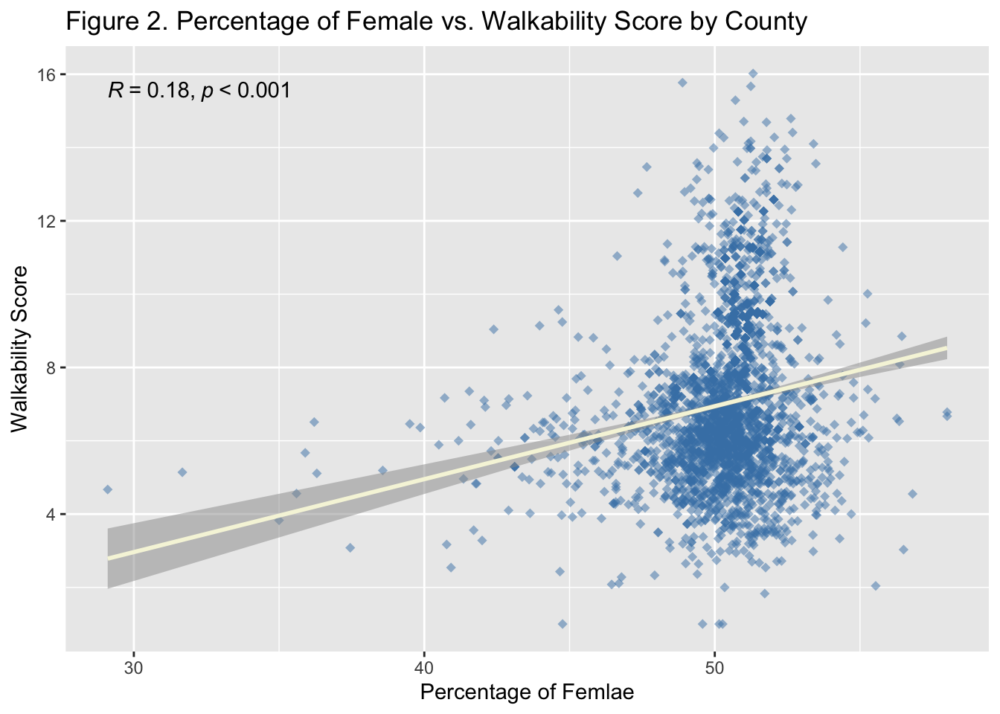
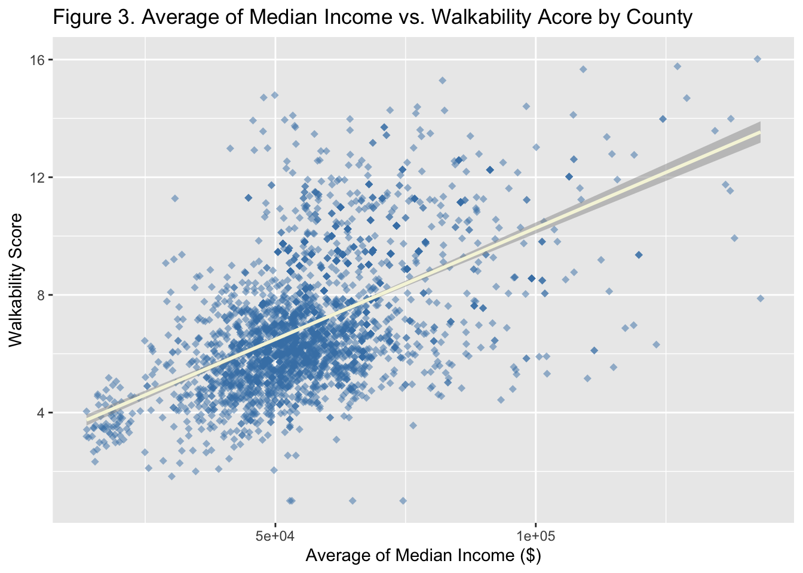
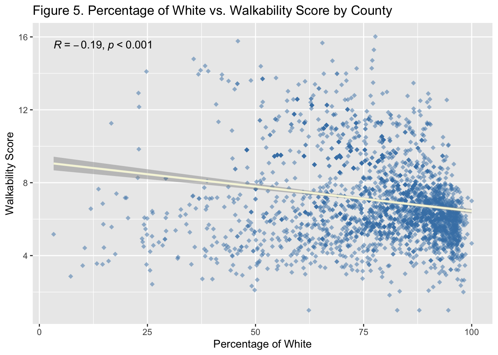
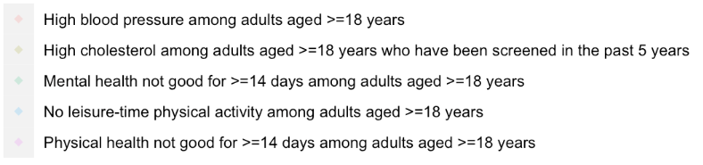
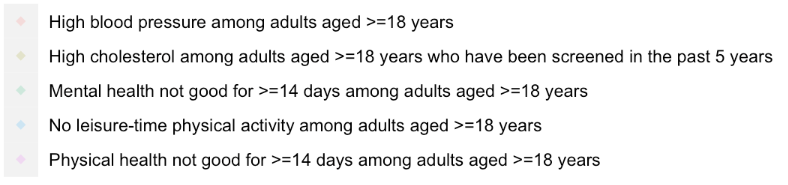

Exploratory Analysis
On this page, we are exploring the overall demographics, walkability and health outcome across geographical regions in the United States. There are three sections on this page.
The first section is on demographics and walkability statistics of the dataset with interactive tables that enable search function to quickly locate data for a specific state or county.
The second section is on health outcomes statistics of the dataset with researchable interactive tables.
The third section is on explortory plots between demographics vs. walkability and health outcomes vs. walkability.
Demographics and Walkability
Overall Demographics
Click to show code
#Load library
library(tidyverse)## ── Attaching packages ─────────────────────────────────────── tidyverse 1.3.2 ──
## ✔ ggplot2 3.4.0 ✔ purrr 0.3.5
## ✔ tibble 3.1.8 ✔ dplyr 1.0.10
## ✔ tidyr 1.2.1 ✔ stringr 1.4.1
## ✔ readr 2.1.3 ✔ forcats 0.5.2
## ── Conflicts ────────────────────────────────────────── tidyverse_conflicts() ──
## ✖ dplyr::filter() masks stats::filter()
## ✖ dplyr::lag() masks stats::lag()library(DT)
library(dplyr)
library(ggplot2)
library(ggpmisc)## Loading required package: ggpp
##
## Attaching package: 'ggpp'
##
## The following object is masked from 'package:ggplot2':
##
## annotatelibrary(ggpubr)
#Explore using final cleaned data
explore_df = read_csv("./data/merge_final.csv")## Rows: 1877910 Columns: 22
## ── Column specification ────────────────────────────────────────────────────────
## Delimiter: ","
## chr (17): fips, statefp, countyfp, tractce, csa_name, location_name, measure...
## dbl (5): blkgrpce, nat_walk_ind, lat, long, data_value
##
## ℹ Use `spec()` to retrieve the full column specification for this data.
## ℹ Specify the column types or set `show_col_types = FALSE` to quiet this message.#Mutate char into num
explore_df = explore_df %>% mutate(sex_female = as.numeric(sex_female), sex_male = as.numeric(sex_male), age_18plus = as.numeric(age_18plus), median_income = as.numeric(median_income), percent_race = as.numeric(percent_race)) %>% separate(name, c("census_track","county", "state"), ",")
#Filter out variables needed for demographics
demographics_df = explore_df %>% select(sex_female, sex_male, age_18plus, median_income, race, percent_race, county, state, nat_walk_ind)#Get overall demographics statistics
overall_demographics = data.frame(
Variables = c("Average Walkability Score", "Percentage of Female", "Percentage of Male", "Percentage of Adults", "Average of Median Income ($)", "Percentage of White", "Percentage of Hispanic", "Percentage of Black", "Percentage of Asian", "Percentage of American Indian and Alaska Native", "Percentage of 2+ Races"),
Results = c((mean(demographics_df$nat_walk_ind, na.rm = TRUE)),
(mean(demographics_df$sex_female, na.rm = TRUE)),
(mean(demographics_df$sex_male, na.rm = TRUE)),
(mean(demographics_df$age_18plus, na.rm = TRUE)),
(mean(demographics_df$median_income, na.rm = TRUE)),
(mean((demographics_df %>% filter(race == "white"))$percent_race, na.rm = TRUE)),
(mean((demographics_df %>% filter(race == "hispanic"))$percent_race, na.rm = TRUE)),
(mean((demographics_df %>% filter(race == "black"))$percent_race, na.rm = TRUE)),
(mean((demographics_df %>% filter(race == "asian"))$percent_race, na.rm = TRUE)),
(mean((demographics_df %>% filter(race == "aian"))$percent_race, na.rm = TRUE)),
(mean((demographics_df %>% filter(race == "2_plus"))$percent_race, na.rm = TRUE)))
)
overall_demographics = overall_demographics %>% mutate(across(where(is.numeric), ~ round(., 2)))
From the table below, the mean walkability score is 9.54, which
is below average walkable according to the National Walkability Index
score ranging from 1 to 20. The percentage of female and male is balance
around 50%. The percentage of adults, which is older than 18 years old,
is 78.23%. The average median income in this dataset is $68,387.44.
Regarding race, there are 70.49% White, 17.37% Hispanic, 13.58% Black,
4.91% Asian, 0.9% American Indian and Alaska Native, and 4.95% who have
more than 2 races.
Overall Walkability
Click to show code
#Filter out state and walkability score
walkability_df = explore_df %>% select(state, nat_walk_ind) %>% group_by(state) %>% summarise_each(funs(mean(., na.rm = TRUE)))
#Delete NA from states
walkability_df = walkability_df[!is.na(walkability_df$state),]
#Plot the distribution of walkability
walkability_plot = walkability_df %>% mutate(state = fct_reorder(state, desc(nat_walk_ind))) %>% ggplot(aes(y = nat_walk_ind, x = state), ordered = TRUE) +
geom_point(shape = "square", color = "steelblue", size = 1, alpha = 0.8) +
labs(
x = "State",
y = "Walkability Score",
title = "Figure 1. Distribution of walkability score by state",
caption = "Dashline represents national average.") + theme(axis.text.x = element_text(angle = 90, vjust = 0.1, hjust=0.9, size = 7), axis.ticks = element_blank()) +
geom_hline(yintercept=9.54, linetype="dashed", color = "Navy")
The highest average walkability score is from the District of
Columbia and the lowest average walkability score is from Puerto
Rico.

Demographics and Walkability by State
Click to show code
#Avg of demographics by state
state_demographics = demographics_df %>%
group_by(state) %>%
summarise_each(funs(mean(., na.rm = TRUE))) %>%
select(-c(race, percent_race,county))
#Avg of race by state
state_demographics_race = demographics_df %>%
group_by(state, race) %>%
summarise_each(funs(mean(., na.rm = TRUE))) %>%
select(c(state, race, percent_race)) %>%
pivot_wider(names_from = "race",
values_from = "percent_race")
#Merge two dataframe
state_demographics_merge = inner_join(state_demographics, state_demographics_race, by = "state") %>%
mutate(across(where(is.numeric), ~ round(., 2))) %>%
relocate(state, nat_walk_ind, sex_female, sex_male, age_18plus, median_income, white, hispanic, black, asian, aian)
#Delete the row with NA
state_demographics_merge = state_demographics_merge[-53,]
Demographics and Walkability by County
Click to show code
#Avg of demographics by county
county_demographics = demographics_df %>%
group_by(county) %>%
summarise_each(funs(mean(., na.rm = TRUE))) %>%
select(-c(race, percent_race, state))
#Avg of race by county
county_demographics_race = demographics_df %>%
group_by(county, race) %>%
summarise_each(funs(mean(., na.rm = TRUE))) %>%
select(c(county, race, percent_race)) %>%
pivot_wider(names_from = "race",
values_from = "percent_race")
#Grab state name
state_name = demographics_df %>% select(c(state,county)) %>% distinct()
#Merge county level data
county_demographics_merge = inner_join(county_demographics, county_demographics_race, by = "county") %>%
mutate(across(where(is.numeric), ~ round(., 2)))
#Add state name into dataframe
county_demographics_merge = left_join(county_demographics_merge, state_name,by = "county", all.x = TRUE) %>%
relocate(county, state, nat_walk_ind, sex_female, sex_male, age_18plus, median_income, white, hispanic, black, asian, aian) %>% drop_na()
Health Outcome
Overall Health Outcome
Click to show code
#Filter out variables needed for health outcome analysis
health_df = explore_df %>% select(sex_female, sex_male, age_18plus, median_income, race, percent_race, county, state, nat_walk_ind, measure, data_value) %>%
group_by(measure) %>%
summarise_each(funs(mean(., na.rm = TRUE))) %>%
select(-c(race, percent_race, county, state))
#Orgnize race info for health outcome analysis
health_df_race = explore_df %>%
group_by(measure, race) %>%
summarise_each(funs(mean(., na.rm = TRUE))) %>%
select(c(measure, race, percent_race)) %>%
pivot_wider(names_from = "race",
values_from = "percent_race")
#Merge two dataframes
health_df = inner_join(health_df, health_df_race, by = "measure") %>%
mutate(across(where(is.numeric), ~ round(., 2))) %>%
relocate(measure, data_value, nat_walk_ind, sex_female, sex_male, age_18plus, median_income, white, hispanic, black, asian, aian)
#Delete NA health outcome and transpose
health_df = health_df[-6,]
health_df = t(health_df)
#Change row names
rownames(health_df) <- c("Health Outcome Measurments","Prevalence of Health Outcome (%)","Average Walkability Score","Percentage of Female", "Percentage of Male", "Percentage of Adults", "Average of Median Income ($)", "Percentage of White", "Percentage of Hispanic", "Percentage of Black", "Percentage of Asian", "Percentage of American Indian and Alaska Native", "Percentage of 2+ Races")
#Dataframe for making the table only
health_df_table = health_df[-1,]
Form this dataset, we explored the prevalence of health outcomes
in the United States.
- The prevalence of high blood pressure is 32.65%
- The prevalence of high cholesterol who have been screened in the past 5 years is 31.98%
- The prevalence of mental health not good for over 14 days is 15.09%
- The prevalence of no leisure-time physical activity is 24.68%
- The prevalence of physical health not good for over 14 days is 10.80%
The walkability score across health outcomes are similar around 9.5, below average walkable. Other demographics of each health outcome is also similar to the national average.
Health Outcome by State
Click to show code
#Filter out state level health outcome data
health_df_state = explore_df %>% select(sex_female, sex_male, age_18plus, median_income, race, percent_race, county, state, nat_walk_ind, measure, data_value) %>%
group_by(state, measure) %>%
summarise_each(funs(mean(., na.rm = TRUE))) %>%
select(-c(race, percent_race, county))
#Delete rows without health outcome data and combine state/health outcome as one variable
health_df_state = health_df_state[!is.na(health_df_state$measure),]
health_df_state$state_measure <- paste(health_df_state$state, "-", health_df_state$measure)
#Filter out state level race data
health_df_state_race = explore_df %>% select(race, percent_race, state, measure) %>%
group_by(state, measure, race) %>%
summarise_each(funs(mean(., na.rm = TRUE))) %>%
pivot_wider(names_from = "race",
values_from = "percent_race")
#Delete rows without health outcome data and combine state/health outcome as one variable
health_df_state_race = health_df_state_race[!is.na(health_df_state_race$measure),]
health_df_state_race$state_measure <- paste(health_df_state_race$state, "-", health_df_state_race$measure)
#Merge race and other data
health_df_merge = inner_join(health_df_state, health_df_state_race, by = "state_measure") %>%
mutate(across(where(is.numeric), ~ round(., 2))) %>%
select(-c(state.x, state.y, measure.x, measure.y)) %>%
relocate(state_measure, data_value, nat_walk_ind, sex_female, sex_male, age_18plus, median_income, white, hispanic, black, asian, aian)
High blood pressure: Mississippi state has the
highest prevalence of 45.86%; Colorado state has the lowest prevalence
of 25.24%
High cholesterol who have been screened in the past 5 years: West Virginia state has the highest prevalence of 37.35%; Wyoming state has the lowest prevalence of 27.15%
Mental health not good for over 14 days: West Virginia state has the highest prevalence of 18.9%; South Dakota state has the lowest prevalence of 11.12%
No leisure-time physical activity: Mississippi state has the highest prevalence of 33.14%; Utah state has the lowest prevalence of 17.35%;
Physical health not good for over 14 days: Mississippi state has the highest prevalence of 33.14%; District of Columbia has the lowest prevalence of 7.73%
Health Outcome by County
Click to show code
#Filter out county level health outcome data
health_df_county = explore_df %>% select(sex_female, sex_male, age_18plus, median_income, county, state, nat_walk_ind, measure, data_value) %>%
group_by(state, county, measure) %>%
summarise_each(funs(mean(., na.rm = TRUE)))
#Delete rows without health outcome data and combine county/state/health outcome as one variable
health_df_county = health_df_county[!is.na(health_df_county$measure),]
health_df_county$state_measure <- paste(health_df_county$county, "-", health_df_county$state, "-", health_df_county$measure)
#Filter out county level race data
health_df_county_race = explore_df %>% select(race, percent_race, county, state, measure) %>%
group_by(county, state, measure, race) %>%
summarise_each(funs(mean(., na.rm = TRUE))) %>%
pivot_wider(names_from = "race",
values_from = "percent_race")
#Delete rows without health outcome data and combine county/state/health outcome as one variable
health_df_county_race = health_df_county_race[!is.na(health_df_county_race$measure),]
health_df_county_race$state_measure <- paste(health_df_county_race$county, "-", health_df_county_race$state, "-", health_df_county_race$measure)
#Merge two datasets
health_df_merge2 = inner_join(health_df_county, health_df_county_race, by = "state_measure") %>%
mutate(across(where(is.numeric), ~ round(., 2))) %>%
select(-c(state.x, state.y, measure.x, measure.y, county.x, county.y)) %>%
relocate(state_measure, data_value, nat_walk_ind, sex_female, sex_male, age_18plus, median_income, white, hispanic, black, asian, aian)
High blood pressure: Monroe County in Alabama
has the highest prevalence of 56.7%; Lincoln County in South Dakota has
the lowest prevalence of 5.34%
High cholesterol who have been screened in the past 5 years: Llano County in Texas has the highest prevalence of 45.44%; Lynchburg city in Virginia has the lowest prevalence of 8.9%
Mental health not good for over 14 days: Socorro County in New Mexico has the highest prevalence of 27.3%; Collier County in Florida has the lowest prevalence of 8.96%
No leisure-time physical activity: Val Verde County in Texas has the highest prevalence of 52%; Eagle County in Colorado has the lowest prevalence of 10.85%
Physical health not good for over 14 days: Val Verde County in Texas has the highest prevalence of 52%; Lincoln County - South Dakota has the lowest prevalence of 5.34%
Exploratory Plots
Gender vs. Walkability
Click to show code
gender_walk_plot = county_demographics_merge %>% ggplot(mapping = aes(x = sex_female, y = nat_walk_ind)) +
geom_point(shape = "diamond", color = "steelblue", size = 2, alpha = 0.5) + labs(
x = "Percentage of Female",
y = "Walkability Score",
title = "Figure 2. Percentage of Female vs. Walkability Score by County") +
geom_smooth(
formula = y ~ x,
method = "lm",
size = 1, color = "beige", alpha = 0.5) +
stat_cor(p.accuracy = 0.001, r.accuracy = 0.01)
Age vs. Walkability
Click to show code
age_walk_plot = county_demographics_merge %>% ggplot(mapping = aes(x = age_18plus, y = nat_walk_ind))+
geom_point(shape = "diamond", color = "steelblue", size = 2, alpha = 0.5) + labs(
x = "Percentage of Adults",
y = "Walkability Score",
title = "Figure 3. Percentage of Adults vs. Walkability Score by County") +
geom_smooth(
formula = y ~ x,
method = "lm",
size = 1, color = "beige", alpha = 0.5) +
stat_cor(p.accuracy = 0.001, r.accuracy = 0.01)
Income vs. Walkability
Click to show code
income_walk_plot = county_demographics_merge %>% ggplot(mapping = aes(x = median_income, y = nat_walk_ind))+
geom_point(shape = "diamond", color = "steelblue", size = 2, alpha = 0.5) + labs(
x = "Average of Median Income ($)",
y = "Walkability Score",
title = "Figure 4. Average of Median Income vs. Walkability Score by County") +
geom_smooth(
formula = y ~ x,
method = "lm",
size = 1, color = "beige", alpha = 0.5) +
stat_cor(p.accuracy = 0.001, r.accuracy = 0.01)Race vs. Walkability
Click to show code
race_walk_plot = county_demographics_merge %>% ggplot(mapping = aes(x = white, y = nat_walk_ind))+
geom_point(shape = "diamond", color = "steelblue", size = 2, alpha = 0.5) + labs(
x = "Percentage of White",
y = "Walkability Score",
title = "Figure 5. Percentage of White vs. Walkability Score by County") +
geom_smooth(
formula = y ~ x,
method = "lm",
size = 1, color = "beige", alpha = 0.5) +
stat_cor(p.accuracy = 0.001, r.accuracy = 0.01)
Health Outcome vs. Walkability
Click to show code
health_walk_plot = health_df_county %>% ggplot(mapping = aes(x = data_value, y = nat_walk_ind, color = measure)) + geom_point(shape = "diamond", size = 2, alpha = 0.5, show.legend = FALSE) + labs(
x = "Prevalence of Health Outcome (%)",
y = "Walkability Score",
title = "Figure 6. Prevalence of Health Outcome vs. Walkability Score") + scale_color_brewer(palette = "Spectral") +
stat_cor(p.accuracy = 0.001, r.accuracy = 0.01, show.legend = FALSE, label.x.npc = 0.8) 
